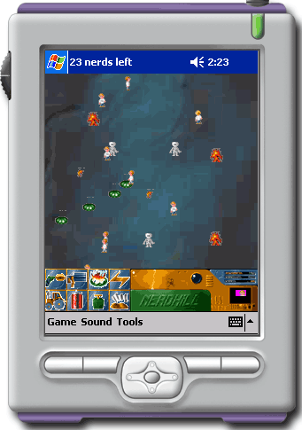

Title: Nerdill game for Pocket PC Author: Raphael MOLL Email: web ralf at alfray dot com Environment: Visual Studio 2003, .Net Compact Framework Keywords: .Net Compact Framework, Managed, Pocket PC, Game Level: Intermediate Description: A shot'em up platform in C# for the .Net Compact Framework Section .Net Compact Framework SubSection Games

Nerdkill is a simple 2D stress-relieving game that involves targeting little nerds that scamper across the screen. I first wrote this game for the BeOS several years ago and last year I rewrote it in C# for .Net and DirectX Managed, mostly as a simple exercise to learn the DirectX Managed APIs.
The article describes the effort of porting a simple 2D game with sound to the Pocket PC, possibly as a 100% Managed application running under .Net Compact Framework, and exploring the limitations imposed by the device and framework capabilities.
The resulting fully functional game and full source code are provided under
a GPL license.
This game was tested on the Pocket PC simulator as well as on a Cassiopeia E-125
(MIPS 140 MHz.)
At the heart of Nerdkill C# (the full desktop version, available at http://www.alfray.com/projects/Nerdkill/) is a reusable game framework that defines a simple architecture to host a game application. The architecture separates the game engine from the platform display, input, sound and resource management by defining the following components:
public interface Engine.IEngineProcess; public interface Engine.IEngine2D; public interface Engine.IEngineSound; public interface Engine.IEngineInput; public interface Engine.IEngineResources;The
IEngineProcess interface is used to implement the game specific
engine. It processes events generated by the input component, updates its internal
states, generates asynchronous requests to play sounds and eventually refreshes
the display by blitting sprites.
All the other interfaces form auxiliary modules which render services for the engine. They abstract the engine from the actual implementation of the resource handling.
In the case of the DirectX Managed version of Nerdkill
C#, IEngine2D is implemented as a windowed DirectX surface
embedded in a Windows.Form, IEngineInput is implemented using mouse
and keyboard events generated by the Windows.Form, IEngineSound
is implemented using DirectSound and IEngineResources is implemented
accessing the data files embedded in the assembly.
The architecture used by Nerdkill is pretty flexible. To port the game to Pocket
PC, it was merely necessary to reimplement the IEngine2D and IEngineSound
interfaces.
The goal was initially to see if the combination of Pocket PC and the .Net Compact Framework was good enough for the two tasks at hand. Ideally the code should be 100% Managed and .Net. In reality, it is all managed yet some parts like the sound left me no choice but access the WinCE APIs through P/Invoke.
Part of the port effort, which I did not exactly expect at first, was adapting the game to the limited resources of the Pocket PC. Obviously every bitmap artwork had to be "shrunk" down to fit on the 240x320 screen and the sounds were sampled down to 11 kHz/8 bits/mono WAV files to reduce the size of the resources. The resulting assembly is 520 kB whereas the original desktop assembly is a mere 2.5 MB.
Luckily most of the gameplay is exactly the same. However, there are a couple of differences. For example on the desktop game, scrolling happens automatically when the mouse approaches the border of the screen. Since there is no MouseOver event with a stylus, I simply use the navigation pad of the Pocket PC instead. A menu that allows to quickly pause the game or disable the sound has been added, and most important it was necessary to automatically pause the game when the application looses the focus, otherwise the game would continue to update when in background, rendering the device extremely slow.
Since the initial goal was a 100% .Net Managed approach to understand the limitations of this framework, the options for rendering 2D bitmaps were rather limited. The requirements for 2D rendering are simple:
I did not want to use a proprietary library such as GAPI, despite the obvious
gain in performances it would give. I was initially tempted to reuse the classic
Win32 approach with BitBlt and co. The bitmap manipulation capabilities
of .Net are pretty limited, especially for the Compact Framework. Nevertheless
it contains everything needed for the purpose here. Bitmaps can be loaded from
resources. The Compact Framework does not allow direct access to the bits of
the bitmaps except using GetPixel and SetPixel, which
are clearly too slow to be acceptable. On the other hand, a Bitmap
object can be used to create a Graphics context for GDI+, allowing
C# code to simply draw in the offscreen bitmap.
The article Flicker
Free Drawing In C# explains the usual DllImport trick to access
the GDI+ functions which are not available directly in .Net: CreateCompatibleDC,
CreateCompatibleBitmap, BitBlt, etc. But more important,
it shows that most of what is needed is present in .Net Compact Framework. The
trick is that a bitmap loaded from resources will not be compatible (thus very
slow to draw) but it can be made compatible by creating a new empty bitmap (automagically
made compatible), getting a Graphics DC from it (thus a compatible
DC) and then using DrawImage to draw the independent bitmap into
the compatible one.
Remember that it is mandatory to release any Bitmap and Graphics
DC objects by calling their Dispose method. Failure to do so will
cripple the application's available resources. It may not be apparent on a desktop
version of Windows but it will be obvious on a Pocket PC when the limited resources
get exhausted.
This code uses the .Net Compact Framework to load a bitmap from the assembly resources and make it compatible:
private Bitmap loadCompatibleBitmap(string filename)
{
System.Type st = this.GetType();
Assembly assembly = st.Assembly;
Stream stream = assembly.GetManifestResourceStream(st.Namespace + "." + filename);
// Get the independent bitmap from resources
Bitmap bitmap = new Bitmap(stream);
stream.Close();
// Extract the transparency color from the upper left corner (a sensible common hack)
// Note: for the full .Net Framework, specify the current PixelFormat in the Bitmap constructor too.
Color bg_col = bitmap.GetPixel(0,0);
Bitmap compatible = new Bitmap(bitmap.Size.Width, bitmap.Size.Height);
Graphics g = Graphics.FromImage(compatible);
// Make sure the offscreen bitmap gets erased with the default
// background color. Here Black is chosen as transparency color.
g.Clear(Color.Black);
// Set the color key to what the image had...
ImageAttributes ia = new ImageAttributes();
ia.SetColorKey(bg_col, bg_col);
g.DrawImage(bitmap,
new Rectangle(0, 0, compatible.Size.Width, compatible.Size.Height),
0, 0,
bitmap.Size.Width, bitmap.Size.Height,
GraphicsUnit.Pixel, ia);
g.Dispose();
bitmap.Dispose();
return compatible;
}
To deal with transparent images, create an ImageAttribute instance,
set the transparency color using ImageAttribute.SetColorKey and
use the Graphics.DrawImage method that accept an ImageAttribute.
The sample code above, the transparency color of the compatible bitmap is set
to black. The actual color will generally depend on your artwork.
The 2D rendering implementation for Nerdkill Pocket uses the same principle everywhere:
Graphics context is created
and the sprite is drawn from the independent bitmap onto the compatible one.
Note that the .Net Compact Framework does not provide the Bitmap constructor
that can extract part of another Bitmap so this workaround is necessary.OnPaint directly in the provided Graphics context.
This avoids flickering.Note that drawing the compatible bitmap manually in OnPaint is
actually pretty fast. A sample code that does just that achieved up to 200 fps
on the simulator and up to 100 fps on my test machine, a Cassiopeia E-125.
The complete source of the 2D Rendering part is available in the source archive. It is implemented in the RGdiGraphics.cs file.
I could not find a 100% .Net Managed way to play sounds for the game.
Instead I found two solutions, both using P/Invoke to access WinCE APIs:
PlaySound function.The PlaySound function is fairly straightforward to use but it
can only play one sound at a time. It can play asynchronously. By default it
will stop the currently playing sound before starting the next one. There's
a flag to avoid that, yet the result is that the new sound will simply not play.
It doesn't mix. A sound can loop too and will stop when the next sound is requested.
In the context of this game, a better sound API is required. Several sounds should be able to play simultaneously. Some sounds need to loop automatically. Clearly, reimplementing my own sound mixer using WaveOut was necessary.
WaveOut has a simple but efficient workflow. Buffers first need to be constructed
and prepared. They are then filled with data and output using waveOutWrite.
Once a buffer has been used, it is returned to the application which can then
fill it again and output it.
The implementation is composed of the following classes:
public class RSoundPlayer: Engine.IEngineSound; public class RISoundReader: IDisposable; public class RWavStreamReader: RISoundReader; public class RWaveOut; public class RMemAlloc;
RWaveOut maps the various WaveOut methods and structures using
DllImport. RMemAlloc does the same for LocalAlloc
and LocalFree which are used to allocate the WaveOut buffers.
The sound mixer does not access any sound resource directly. It uses the RISoundReader
interface that knows how to read a new buffer of data. The actual reader is
implemented by RWavStreamReader and is constructed from a Stream
extracted directly from the assembly resources. Since memory is at a premium
on Pocket PC, it is neither necessary nor useful to read the full assembly resource
stream into a memory buffer. The data can be accessed directly from the resource
stream.
The sound data is expected to be formatted as WAV files, mono, 8 bits, 11.025 kHz. The stream reader validates the WAV file header to ensure these properties.
Using the WaveOut API is pretty simple: memory buffers are created and "prepared"
using waveOutPrepareHeader; they are then filled with data and
set to play using waveOutWrite. When the WaveOut interface is done
with each buffer, it sends a message to a HWND. The window callback recycles
the buffer. The .Net Compact Framework does not allow access to the underlying
implementation of a Windows.Form, that is its HWND cannot be retrieved and its
WndProc callback cannot be used. To circumvent this limitation, the WinCE's
.Net-specific class Microsoft.WindowsCE.Forms.MessageWindow is
used:
private class RWaveOutMsgWindow: MessageWindow
{
public delegate void Callback(IntPtr waveHdrPtr);
public void SetBufferDoneCallback(Callback cb)
{
mBufferDoneCallback = cb;
}
protected override void WndProc(ref Message m)
{
if (m.Msg == RWaveOut.MM_WOM_DONE && mBufferDoneCallback != null)
mBufferDoneCallback(m.LParam);
base.WndProc(ref m);
}
private Callback mBufferDoneCallback = null;
}
public RSoundPlayer()
{
...
mWceMessageWindow = new RWaveOutMsgWindow();
mWceMessageWindow.SetBufferDoneCallback(
new RWaveOutMsgWindow.Callback(this.waveOutBufferDone));
...
}
The sound mixer maintains a list of sounds that are currently being played. For each of these sounds, a structure holds the current read position, the total size, a stop flag and a repeat flag. The sound mixer also maintains a queue of available WaveOut buffers.
The actual mixer code runs in a thread with the following workflow:
public RSoundPlayer()
{
// create non-signaled (blocking) event
mMixerEvent = new AutoResetEvent(false);
// start the mixer thread
mMixerThread = new Thread(new ThreadStart(this.mixerLoop));
mMixerThread.Start();
}
private void addSound(RISoundReader reader)
{
lock(mPlayingSounds.SyncRoot)
{
RSoundData sd = new RSoundData(reader);
mPlayingSounds.Add(sd);
}
// signal the mixer another buffer can be processed
mMixerEvent.Set();
}
private void mixerLoop()
{
// wait on the event signal...
while (mMixerEvent != null && mMixerEvent.WaitOne())
...
}
waveOutWrite.Mixing the actual data in the buffers is done using unsafe C# code (the
unsafe keyword allows C# code to manipulate pointers and use pointer
arithmetic). Here is a simplified version of the method mixBuffer
from RSoundPlayer.cs (the full version is available in the source archive):
int max_data = 0;
unsafe
{
int *header = (int *) waveHdr.ToPointer();
// get the address of the buffer and its size
uint *dest32 = (uint *)(header[0]);
int size = mWaveBufferSize / 4;
// initialize the buffer with 0x80 bytes, *not* zeroes!
// wave data is from -128 to +127 with a middle point offset at +128.
while(size-- > 0)
*(dest32++) = 0x80808080;
}
// accumulate all currently playing sounds in the wave out buffer
lock(mPlayingSounds.SyncRoot)
{
for(int i = mPlayingSounds.Count-1; i >= 0; i--)
{
RSoundData sd = mPlayingSounds[i] as RSoundData;
int read_size = sd.mSize - sd.mOffset;
if (read_size > kReadBufferSize)
read_size = kReadBufferSize;
// Read a block from the sound stream
sd.mReader.Read(mMixerBuffer, sd.mOffset, read_size);
sd.mOffset += read_size;
unsafe
{
unchecked
{
fixed(byte *source = mMixerBuffer)
{
int *header = (int *) waveHdr.ToPointer();
byte *dest = (byte *) (header[0]);
int rsn = read_size * mSampleSize;
if (rsn > max_data)
max_data = rsn;
byte *src = (byte *)source;
for (int c = read_size; c > 0; c--)
{
// Each byte is 0..255 but it really represents
// a sample which is -128..+127.
// So the real operation here is:
// dest = 128 + (dest-128) + (src-128);
// which is:
// dest += src-128;
// then 0..255 clipping must be done.
int a = (int)(*dest) + (int)(*(src)++) - 0x80;
if (a < 0)
a = 0;
else if (a > 0xFF)
a = 0xFF;
byte b = (byte)a;
for(int j = mSampleSize; j > 0; j--)
*(dest++) = b;
}
} // fixed
} // unchecked
} // unsafe
// end reached?
if (sd.mOffset >= sd.mSize)
{
if (sd.mRepeat)
sd.mOffset = 0;
else
// remove buffer from list
mPlayingSounds.RemoveAt(i);
}
} // for mPlayingSounds
} // lock mPlayingSounds
// Update the size really used in the buffer
unsafe
{
int *header = (int *) waveHdr.ToPointer();
// reset some members of a WaveHdr:
// set the dwBytesRecorded field to the number of actual bytes
header[2] = max_data; // public uint ;
// set the dwFlags field... only clear WHDR_DONE here
header[4] = header[4] & (~RWaveOut.WHDR_DONE);
}
The mixer is only targeted towards 8-bits output yet it can output to 11.025, 22.050 or 44 kHz streams, mono or stereo. This is done by expanding each byte of input as many bytes as necessary to fit in one output sample (no audio filtering is performed). This way the mixer code can stay very simple yet be reasonably adaptive.
In the code, note the usage of the C#-specific keyword fixed. This allows the code to retrieve a pointer on a Managed buffer. When doing this, .Net "pins down" the pointed object so that the Garbage Collector will not move it around. Operations on the pointer can be done as in C/C++ using the familiar "*(dest++)" syntax.
An important note is that since the mixer uses unsafe code, the assembly must be compiled as such. Under Visual Studio, this is done by setting the project's Configuration Property > Build > Allow Unsafe Code Blocks to True. This also means that special rights are necessary to run such an assembly. By default an application running from a desktop or a palm device has such rights. It wouldn't be the case if it was run as a Smart Client or in non-trusted sand box.
In the two previous blocks of code and throughout the RSoundPlayer.cs source,
you can also notice the C# keyword lock. This primitive locks a Managed
object for exclusive access (mutex). This is used here to synchronize access
to the mPlayingSound ArrayList which holds the current
list of sounds being played. The mixer thread reads from this list whilst the
application thread appends new sound requests to it.
The .Net Compact Framework is a suitable candidate for games on the Pocket PC platform.
The main advantage is of course the CLR: compile it once and run it everywhere. Once the .Net Compact Runtime has been installed on the device, the assembly can be deployed no matter what the underlying architecture is.
Draw backs exists though. Blitting full-screen graphics in a Windows.Forms and performing offscreen rendering using solely the Managed interface to GDI+ is not exactly fast. It is barely usable. The game presented here does not try to optimize the rendering to its extreme, which I believe would come at the expense of a simple and somehow generic framework. As it is, the current engine is capped to 10 fps max. It can achieve this frame rate on the simulator but I never saw it go past 4 or 5 fps on a Cassiopeia E-125. By disabling part of the core rendering loop, it is easy to notice that the more small sprites need to be blitted in the offscreen bitmap, the slower the game gets. These graphic updates could probably be made a bit faster by analyzing the needs of the current game and reducing screen updates to the minimum.
The other obvious limitation of the .Net Compact Framework is the complete
absence of sound support. This is not surprising since .Net focus is obviously
on building applications relying on Windows.Form. Nevertheless it is a bit disappointing
that not even WinCE's PlaySound made it to a Managed class available
by default. Since this would not address the needs of a game, it is not a major
issue here.
Deployment is another issue. Visual Studio 7.1 has the ability to generate CAB files. It generates 5 of them, for different architectures. This seems at first surprising since one of the main points of using .Net is to have a single platform-agnostic executable. The reality is that the CLR needs the .Net Compact Framework to be installed and the generated CAB files contain a little native DLL that will check if this is the case. So in effect, unless one assumes the framework is installed, it is necessary to have one CAB per targeted architecture. Fortunately, it seems reasonable to limit ourselves to ARM (for all recent Pocket PCs), MIPS (for older Pocket PCs) and maybe x86 (for the simulator).
The underlying framework presented here can be reused for other applications.
It is made available freely under a GPL license. I tried as much as possible
to dissociate the game logic from the framework, in the hope that it would be
easy to reuse.
As noted before, the frame per second speed of the current game is rather low.
This is due to the code being written as generic and as modular as possible
for the purpose of this article. In real life, you may want to introduce a phase
of optimization -- analyze speed bottlenecks and rewrite part of the core/game
loop or maybe use some unsafe code to perform internal bitblits for example.
This is left as an exercise for the reader :-)
Finally, I'd like to thank Mathias for allowing me to use his Cassiopeia E-125 for testing. Since it is powered "only" by a 140 Mhz MIPS processor, it is by far not the fastest Pocket PC currently available, which makes it great to see performances issues first hand. I haven't had a chance to run the game on a recent ARM-powered Pocket PC.
2004/05/27: Version 1.0 of Nerdkill
Pocket and original
article.
2004/06/27: Article update (typos, etc.). Splitted demo project in per-architecture
downloads.
Click here to go back to the Nerdkill home page: http://www.alfray.com/projects/Nerdkill/.